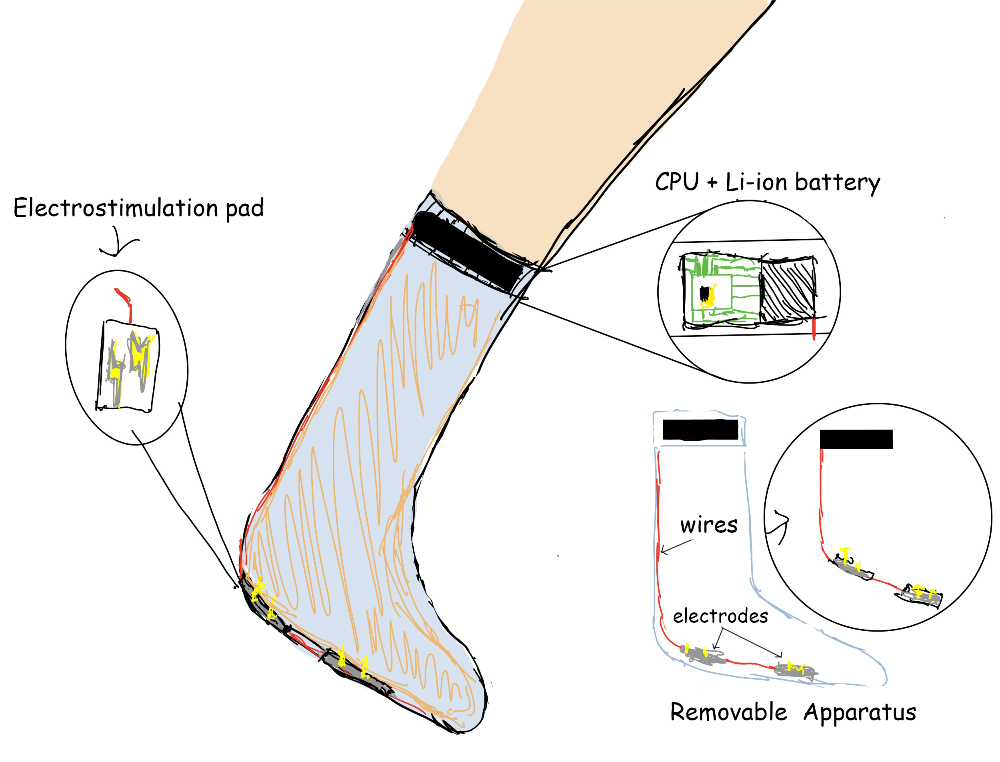
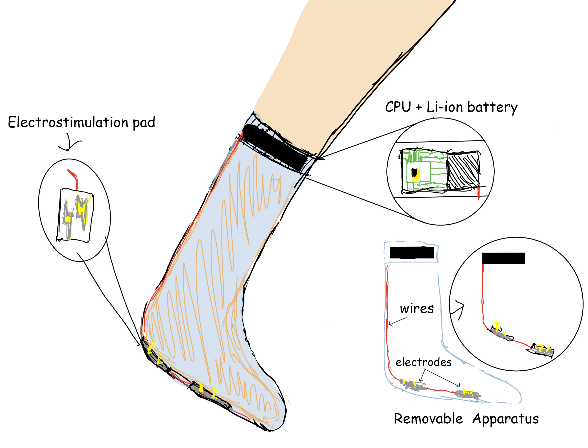

Meta Data Challenge
In March, I was chosen as one of 86 undergraduate students in North America selected for a competitive five-month data science apprenticeship involving small and large group projects, one-on-one mentorship opportunities, peer networking and technical workshops.
During this time I had one project where I was tasked with analyzing a Netflix dataset to understand what content is successful in Netflix Canada. In order to complete this, I felt that I needed to gather more data related to the titles. The ideal dataset, I believed would include the total number of streams for each title. This is not data that is easily available outside of Netflix, so I decided to think of other measures that might work.

I decided to use the number above, the number of IMDB reviews that are posted to the website. In order to get this data, however, I would need to web scrape for it. I used beautiful soup and requests to gather the information on all of the imdb ratings for matching titles on Netflix. I then downloaded this to a csv so that I could use it in my observations.
Visualized data
After aggregating the data, I used Matplotlib to generate insights around Netflix titles in Canada. I found a variety of insights around what types of content is successful. One example is that movies with the tags sci-fi and thriller have far higher median number of review counts on IMDB vs other titles. I used this data to then plot the review score /8 on IMDB vs the review counts for the sample titles. Below is an example graph with the x axis being rating value, and y being number of ratings on IMDB.


 
